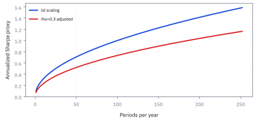

3.5 Hypothesis Testing and Sharpe-Ratio Inference
ถามว่าผลงานดีเกินกว่าจะอธิบายด้วยโชคหรือยัง
ทีมวิจัยทดสอบกลยุทธ์ momentum ย้อนหลัง 3 ปี ได้ Sharpe ratio 1.20 ถ้ากลยุทธ์ไม่มี edge เลย โอกาสเห็นผลห่างศูนย์ขนาดนี้คือเท่าไร และถ้ามี edge จริงเท่าที่เห็น การทดสอบนี้มีโอกาสจับได้เท่าไร?
เฉลย: โอกาส 3.77% จึงผ่านเกณฑ์ 5% แต่เฉียดมาก Sharpe ขั้นต่ำคือ 1.132 มีแค่ 1.20 ถ้า edge จริงเท่าที่เห็น การทดสอบสามปีจับได้แค่ 54.7% เกือบเท่าโยนเหรียญ และช่วง 95% ของ Sharpe จริงคือ −0.28 ถึง 2.68
hypothesis test แปลงคำถามว่าเก่งหรือโชคดีเป็นตัวเลขที่ตรวจได้ หัวข้อนี้สร้างทุกตัวเลขข้างบนทีละบรรทัด
ศัพท์ที่ใช้ในหัวข้อนี้
- null hypothesis
- ข้อความที่ตั้งไว้เพื่อพยายามล้ม มักคือกลยุทธ์ไม่มี edge ใช้เป็นโลกสมมติที่คำนวณได้ว่าผลแบบที่เห็นเกิดบ่อยแค่ไหน
- alternative hypothesis
- ข้อความที่จะยอมรับถ้า null ถูกล้ม ใช้กำหนดว่าดูหางเดียวหรือสองหาง ต้องประกาศก่อนดูข้อมูล
- test statistic
- ตัวเลขที่วัดว่าผลที่เห็นห่างจาก null กี่เท่าของความคลาด ใช้เทียบกับเกณฑ์ที่ตั้งไว้ล่วงหน้า
- p-value
- โอกาสภายใต้ null ที่จะเห็นผลสุดโต่งเท่าที่เห็นหรือยิ่งกว่า ใช้วัดว่าข้อมูลเข้ากับ null แค่ไหน ไม่ใช่โอกาสที่กลยุทธ์ไร้ค่า
- significance level
- เกณฑ์ p-value ที่ประกาศก่อนดูข้อมูล เช่น 5% ใช้ตัดสินว่าจะปฏิเสธ null หรือไม่
- statistical power
- โอกาสที่การทดสอบจะปฏิเสธ null เมื่อ edge มีอยู่จริงในขนาดที่กำหนด ใช้วางแผนระยะเวลาทดสอบก่อนเริ่ม
- false negative
- การไม่ปฏิเสธ null ทั้งที่ edge มีอยู่จริง โอกาสของมันเท่ากับหนึ่งลบ power ใช้บอกว่ากลยุทธ์ที่ดีจริงจะถูกตีตกบ่อยแค่ไหน
- Sharpe ratio (SR)
- ผลตอบแทนส่วนเกินเฉลี่ยหารความผันผวนในช่วงเวลาเดียวกัน ใช้สรุปผลตอบแทนต่อความเสี่ยง แต่ไม่บอกขาดทุนที่หาง สภาพคล่อง หรือขนาดเงินที่รับได้
- standard error (SE)
- ความผันผวนของค่าที่ประมาณได้ถ้าเก็บข้อมูลใหม่ (หัวข้อ 3.3) ใช้สร้างช่วงของ Sharpe จริง
- Delta method
- การประมาณความผันผวนของ function ของค่าประมาณด้วยความชันของมัน ใช้หาความคลาดของ Sharpe ที่เป็นอัตราส่วนของสองค่าประมาณ
- autocorrelation
- correlation ของผลตอบแทนกับตัวเองในงวดก่อน ใช้ตรวจว่าความคลาดแบบข้อมูลอิสระแคบเกินจริงหรือไม่
- slippage
- ส่วนต่างระหว่างราคาที่คาดว่าจะได้กับราคาที่ได้จริง ใช้หักออกจากผลตอบแทนก่อนทดสอบ เพราะการทดสอบไม่รู้ว่าตัวเลขหักต้นทุนแล้วหรือยัง
- block bootstrap
- การสุ่มข้อมูลซ้ำเป็นท่อนติดกันเพื่อรักษาความเกี่ยวกันข้ามเวลา ใช้ประมาณความคลาดเมื่อสูตรข้อมูลอิสระใช้ไม่ได้
- paper trading
- การรันกลยุทธ์กับราคาจริงโดยไม่ใช้เงินจริง ใช้เก็บหลักฐานเพิ่มก่อนเพิ่มขนาด
สัญลักษณ์ที่ใช้ในหัวข้อนี้
| สัญลักษณ์ | ความหมาย | หน่วย |
|---|---|---|
| $r_{e,t}$ | ผลตอบแทนส่วนเกินของงวด $t$ หลังหักดอกเบี้ยไร้ความเสี่ยงและต้นทุน | ทศนิยม/งวด |
| $\bar r_e$, $s_e$ | ค่าเฉลี่ยและความผันผวนของผลตอบแทนส่วนเกิน | ทศนิยม/ปี |
| $\mathrm{SR}$, $\widehat{\mathrm{SR}}$ | Sharpe จริงที่มองไม่เห็น และค่าที่คำนวณได้ | ต่อปี ไม่มีหน่วย |
| $T$ | จำนวนปีที่ไม่เกี่ยวกันจริง | ปี |
| $H_0$, $H_1$ | null และ alternative hypothesis | — |
| $t$ | test statistic | ไม่มีหน่วย |
| $p$ | p-value | 0 ถึง 1 |
| $\alpha$ | significance level ที่ประกาศก่อนดูข้อมูล | 0 ถึง 1 |
| $\rho_k$ | autocorrelation ที่ห่าง $k$ งวด | ไม่มีหน่วย |
| $\Phi$ | พื้นที่ใต้ระฆังมาตรฐานทางซ้ายของจุดหนึ่ง | 0 ถึง 1 |
ที่มาที่ไป: คำถามที่ต้องตอบก่อนใส่เงินจริง
กรอบคิดของการทดสอบพัฒนาในต้นศตวรรษที่ยี่สิบโดยสองสำนักที่เถียงกันดุเดือด Fisher กับ Neyman และ Egon Pearson ทั้งสองเห็นตรงกันว่าต้องตั้งสมมติฐานตรงข้ามไว้ก่อน แล้วถามว่าข้อมูลค้านมันได้แรงแค่ไหน ค่า 5% เป็นธรรมเนียมที่ Fisher ตั้งไว้ในทศวรรษ 1920 ไม่ใช่กฎธรรมชาติ
William Sharpe เสนออัตราส่วนนี้ในปี 1966 แต่อุตสาหกรรมใช้มันเป็นตัวเลขแน่นอนมาอีกกว่าสามสิบปี จนราวปี 2002 Andrew Lo เตือนว่า Sharpe เป็นค่าประมาณที่มีความคลาดมหาศาลเมื่อประวัติสั้น ในการเงินมีข้อควรระวังเพิ่มอีกสองข้อ ผลตอบแทนงวดติดกันเกี่ยวกัน และเรามักทดสอบกลยุทธ์เป็นร้อยแล้วเลือกตัวที่ผ่าน
ขั้นที่ 1 — นับด้วยมือ: สามปีเขียวติดกันพิสูจน์อะไรได้
สมมติผลตอบแทนรายปีไม่มีฝีมือ สมมาตรรอบศูนย์ และปีต่าง ๆ ไม่เกี่ยวกัน ปีบวกจึงมีโอกาสครึ่งหนึ่ง เหมือนโยนเหรียญ
นี่คือหัวใจของ hypothesis test ในภาษานับนิ้ว สมมติว่าไม่มีฝีมือ แล้วถามว่าสิ่งที่เห็นเกิดบ่อยแค่ไหน สามปีเขียวเกิดหนึ่งในแปด ไม่แปลกเลย กองทุนไร้ฝีมือ 200 กองจะมีราว 25 กองที่โชว์สามปีเขียวได้ หัวข้อ 3.6 จะจัดการปัญหานี้
ขั้นที่ 2 — จากค่าเฉลี่ยของผลตอบแทนส่วนเกินไปสู่การทดสอบ Sharpe
null คือกลยุทธ์ไม่มี edge ค่าเฉลี่ยของผลตอบแทนส่วนเกินจึงเป็นศูนย์ ซึ่งก็คือ Sharpe จริงเป็นศูนย์ วัดว่าค่าเฉลี่ยที่เห็นห่างศูนย์กี่เท่าของความคลาด
ความคลาดของค่าเฉลี่ยคือความผันผวนหารรากของจำนวนปี จัดรูปแล้ว s_e ไปรวมกับค่าเฉลี่ยเป็น Sharpe ส่วนรากของจำนวนปีขึ้นไปคูณด้านบน การทดสอบนี้จึงต้องรู้แค่ Sharpe กับจำนวนปี ไม่ต้องรู้ค่าเฉลี่ยกับความผันผวนแยกกัน
ขั้นที่ 3 — p-value สองหาง และผ่านแบบเฉียดแค่ไหน
ภายใต้ null ค่า t มีรูปราวระฆังมาตรฐาน alternative คือ edge ต่างจากศูนย์ทั้งสองทาง จึงนับทั้งสองหาง
Φ ไม่มีสูตรปิด ต้องเปิดตาราง ผ่านเกณฑ์ 5% ก็จริง แต่ Sharpe เกินเส้นแค่ 0.068 หรือราว 6% ของค่าที่ต้องการ ถ้าเดือนใดเดือนหนึ่งใน 36 เดือนแย่ลงนิดเดียว ผลจะพลิกเป็นไม่ผ่านทันที
ภาพ 3.5a — Sharpe 1.20 ในสามปีอยู่ตรงไหนใต้ null

Sharpe 1.20 ในสามปีให้ t = 2.078 พื้นที่สองหางเกินค่านี้ราว 3.77% ผลน่าสนใจ แต่ข้อมูลสามปีสั้นพอที่การประมาณด้วยระฆังและความเกี่ยวกันต้องถูกตรวจเข้มกว่าตัว p-value
ขั้นที่ 4 — ผู้จัดการของหัวข้อ 3.2: 16 ปีให้ p = 4.55%
active return 3% เหวี่ยง 6% ต่อปี มี Information ratio (IR) 0.5 จากหัวข้อ 3.2 ค่า t เท่ากับ 0.5 คูณรากของจำนวนปี ที่ 16 ปีได้ t = 2
ผ่านเกณฑ์ 5% แบบเฉียดเช่นกัน p = 4.55% แปลว่าถ้าผู้จัดการไม่มีฝีมือเลย โอกาสบังเอิญเห็นผลห่างศูนย์ขนาดนี้คือ 4.55% ไม่ได้แปลว่าโอกาสที่ผู้จัดการไม่มีฝีมือคือ 4.55%
ขั้นที่ 5 — power: ถ้ามีฝีมือจริง จะจับได้บ่อยแค่ไหน
สมมติ active return 3% เป็นของจริง ค่า t ที่วัดได้จะแกว่งรอบค่าเฉลี่ย 2.00 ด้วยความผันผวน 1 ปฏิเสธ null เมื่อ t เกิน 1.96 เลื่อนจุดศูนย์ไปที่ 2.00 แล้วอ่านพื้นที่
ข้อมูล 16 ปีให้ p = 4.55% ก็จริง แต่ถ้าผู้จัดการเก่งจริง การทดสอบจับได้แค่ครึ่งเดียว โยนเหรียญก็ได้เท่านี้ 0.8416 คือจุดที่ระฆังมีพื้นที่ทางซ้าย 80% อยากจับได้ 80% ของเวลาต้องใช้ 32 ปี นี่คือครึ่งที่หายไปของการทดสอบ
ขั้นที่ 6 — power ของ backtest สามปี: 54.7%
ทำแบบเดียวกันกับ Sharpe 1.20 สามปี ค่า t ที่คาดคือ 2.0785 ความผันผวน 1
ถ้า Sharpe จริงคือ 1.20 เท่าที่เห็น ทำ backtest สามปีซ้ำหลายครั้ง จะผ่านเกณฑ์แค่ 54.7% ของเวลา อีก 45.3% กลยุทธ์ที่ดีจริงจะถูกตีตกว่าไม่มีนัยสำคัญ ผ่านครั้งนี้จึงเป็นโชคพอ ๆ กับฝีมือ
ขั้นที่ 7 — ความคลาดของ Sharpe เอง: สองแหล่งรวมกัน
ขั้นที่ 2 ทดสอบว่าค่าเฉลี่ยต่างจากศูนย์ไหม ตอนนี้ถามใหม่ว่า Sharpe จริงน่าจะเท่าไร Sharpe เป็นอัตราส่วนของค่าประมาณสองตัว ใช้ Delta method กระจายรอบค่าจริง
ความชันตามค่าเฉลี่ยคือหนึ่งส่วน σ ตามความผันผวนคือ −μ/σ² variance ของความผันผวนคือ σ²/(2T) จากหัวข้อ 3.3 ผลตอบแทนแบบระฆังทำให้ค่าเฉลี่ยกับความผันผวนไม่เกี่ยวกัน พจน์ไขว้จึงเป็นศูนย์
เลข 1 มาจากความไม่แน่นอนของค่าเฉลี่ย 0.72 มาจากความไม่แน่นอนของความผันผวน ตอนทดสอบใช้ 0.577 เพราะภายใต้ null Sharpe เป็นศูนย์ พจน์หลังจึงหาย ช่วงครอบทั้ง Sharpe ติดลบและ 2.68 ข้อมูลสามปีไม่ได้ตัดความเป็นไปได้ไหนทิ้งเลย
ขั้นที่ 8 — ต้องใช้ข้อมูลกี่ปี: พลิกสูตรกลับ
จาก t = Sharpe คูณรากของจำนวนปี ได้จำนวนปีเท่ากับ t หาร Sharpe ทั้งก้อนกำลังสอง ตอบสามคำถามที่ต่างกัน
ผ่านเกณฑ์ 5% ต้องใช้แค่ 2.67 ปี จึงผ่านมาได้แบบเฉียด แต่ให้ช่วงของ Sharpe พ้นศูนย์ต้องใช้ 4.59 ปี และถ้าใช้เกณฑ์ที่เข้มกว่าอย่าง t = 3 ต้อง 6.25 ปี เกณฑ์ที่เข้มขึ้นต้องซื้อด้วยเวลา ไม่ใช่ด้วยการแปลงข้อมูลรายวันซ้ำ ๆ
ภาพ 3.5b — ความยาว track record เปลี่ยน evidence อย่างไร

เมื่อ Sharpe จริงเท่ากับ 1.20 ค่า t ที่คาดคือ 1.2 คูณรากของจำนวนปี เส้นตัด t = 2 ที่ 2.78 ปี และ t = 3 ที่ 6.25 ปี
ขั้นที่ 9 — เมื่อผลตอบแทนงวดติดกันเกี่ยวกัน: ความคลาดต้องขยาย
กาง variance ของผลรวมให้ครบรวมพจน์ไขว้ทุกคู่ คู่ที่ห่างกัน k งวดมี T − k คู่ แต่ละคู่มี covariance เท่ากับ variance คูณ autocorrelation
γ₀ คือ variance ของงวดเดียว ถ้าความเกี่ยวกันจางครึ่งหนึ่งทุกงวด ตัวคูณของ variance เป็นสามเท่า ความคลาดโต 1.732 เท่า ค่า t ที่รายงานไว้ต้องเอาเลขนั้นหาร t = 2.08 จะเหลือ 1.20 กลยุทธ์ที่ดูผ่านเกณฑ์อาจไม่ผ่านเลย
ภาพ 3.5c — smoothing ทำให้ Sharpe ที่รายงานดูสูงเกิน

สำหรับ autocorrelation งวดติดกันแบบง่าย ตัวคูณของความคลาดระยะยาวคือรากของ (1 + ρ)/(1 − ρ) ที่ ρ = 0.5 ความคลาดโตรากของ 3 เท่า ผลตอบแทนรายเดือนจากราคาประเมินของสินทรัพย์สภาพคล่องต่ำจึงไม่ควรได้ประโยชน์จากสูตรข้อมูลอิสระ
ภาพ 3.5d — annualization ต้องระบุสมมติฐาน

เส้นน้ำเงินคือการคูณรากของจำนวนงวดสำหรับ Sharpe ต่องวด 0.10 เมื่อผลตอบแทนไม่เกี่ยวกัน เส้นแดงลดลงเมื่อ autocorrelation 0.3 การรายงาน Sharpe รายปีตัวเดียวโดยไม่บอกความถี่และความเกี่ยวกัน ทำให้ผู้รับรายงานตรวจเหตุผลไม่ได้
คำตอบ ตรวจเอง และแปลว่าอะไร
โจทย์ให้อะไรมาบ้าง: backtest momentum 3 ปี Sharpe 1.20 เกณฑ์ 5% สองหาง null คือไม่มี edge
คำตอบ: (ก) t = 2.0785 p-value 3.77% ผ่านเกณฑ์ แต่ Sharpe ขั้นต่ำคือ 1.132 (ข) ความคลาดของ Sharpe 0.757 ช่วง 95% คือ [−0.28, 2.68] (ค) ผ่านเกณฑ์ต้อง 2.67 ปี ช่วงพ้นศูนย์ต้อง 4.59 ปี t = 3 ต้อง 6.25 ปี (ง) power ที่สามปีคือ 54.7%
ตรวจเองใน 10 วินาที: 1.20 × 1.732 = 2.08 และ (3/1.2)² = 6.25
แปลว่าอะไร: ถือเป็นผู้สมัครสำหรับวิจัยต่อ ทดลอง paper trading แล้วเพิ่มขนาดตามหลักฐานที่สะสม ไม่ใช่ตามตัวเลข Sharpe ตัวเดียว
ตัวอย่างที่สอง — ผู้จัดการ IR 0.5 ในอุตสาหกรรมจริง
โจทย์ให้อะไรมาบ้าง: active return 3% เหวี่ยง 6% ต่อปี ผู้จัดการอยู่ในตำแหน่งเฉลี่ยไม่ถึง 5 ปี
คำตอบ: ที่ 5 ปี t = 0.5 × 2.236 = 1.12 ยังไม่ถึง 1.96 ต้องใช้ 16 ปีถึงได้ p = 4.55% และ power แค่ 51.6% ถ้าอยากจับได้ 80% ต้อง 32 ปี
ตรวจเองใน 10 วินาที: (2.8016/0.5)² = 31.4 ปัดขึ้นเป็น 32
แปลว่าอะไร: ข้อมูลที่มีอยู่จริงในอุตสาหกรรมบอกอะไรเรื่องฝีมือของผู้จัดการระดับนี้ไม่ได้เลย ก่อนเถียงว่ากองไหนเก่งกว่า ให้คำนวณความคลาดก่อนเสมอ
ขั้นต่ำของรายงานการทดสอบ Sharpe
| ช่อง | ต้องล็อกก่อนดูผล | ตัวอย่าง |
|---|---|---|
| null และจำนวนหาง | $H_0$ และหางเดียวหรือสองหาง | SR = 0 สองหาง |
| นิยามผลตอบแทน | ดอกเบี้ยไร้ความเสี่ยง ต้นทุน ค่ายืมหุ้น สกุลเงิน | ผลตอบแทนส่วนเกินสุทธิเป็น USD |
| ช่วงเวลา | ความถี่ จำนวนปี กติกาแปลงเป็นรายปี | รายเดือน 3 ปี |
| วิธีจัดการความเกี่ยวกัน | ข้อมูลอิสระ long-run variance หรือ block bootstrap | block bootstrap ท่อนละ 20 วัน |
| การตัดสินใจ | เกณฑ์และสิ่งที่ทำ | t ต่ำกว่า 3: paper trading เท่านั้น |
การทดสอบ Sharpe ตัวเดียวไม่แก้ปัญหาการลองหลายแบบ บันทึกการวิจัยต้องส่งจำนวนแบบที่ลองไปหัวข้อ 3.6
กับดัก: p-value ต่ำไม่ใช่งบความเสี่ยง
p = 0.03 ไม่ได้แปลว่ามีโอกาส 3% ที่กลยุทธ์ไร้ค่า แต่แปลว่าถ้ากลยุทธ์ไร้ค่าจริง จะมีโอกาส 3% ที่เห็นผลดีขนาดนี้ p-value ไม่ใช่ขนาดของ alpha และไม่ใช่โอกาสทำเงินเดือนหน้า ผลที่ผ่านเกณฑ์ยังอาจขาดทุนหางหนัก ใช้เงินกู้สูง หรือมาจากการเลือก ราคาที่ค้างและการถือครองที่ซ้อนกันทำให้ความผันผวนต่ำและจำนวนปีดูมากเกินจริง
ข้อจำกัด: วิธีนี้สมมติอะไร และของจริงเป็นอย่างไร
| เรื่อง | วิธีนี้สมมติว่า | ของจริงเป็นอย่างไร | ผลที่ตามมาเวลาใช้งาน |
|---|---|---|---|
| independence | ผลตอบแทนแต่ละช่วงไม่เกี่ยวกัน | เกี่ยวกัน โดยเฉพาะกลยุทธ์ที่ถือยาว | ความคลาดเคลื่อนที่คำนวณได้ต่ำเกินจริง จึงสรุปว่าเก่งทั้งที่หลักฐานไม่พอ |
| การตั้งเกณฑ์ล่วงหน้า | ตั้งเกณฑ์ก่อนดูข้อมูล | คนมักปรับเกณฑ์หลังเห็นผลแล้ว | การทดสอบเสียความหมายทันทีเมื่อทำแบบนั้น |
| การทดสอบครั้งเดียว | ทดสอบกลยุทธ์เดียว | เราทดสอบเป็นร้อยแล้วเลือกตัวที่ผ่าน | ค่าที่ได้ไม่มีความหมาย ต้องปรับด้วยวิธีในหัวข้อ 3.6 |
แถวล่างเป็นเหตุผลที่ผลงานวิจัยกลยุทธ์จำนวนมากซ้ำไม่ได้ในการใช้งานจริง
แล้วเอาไปใช้ทำอะไรได้จริงบ้าง
ใช้ตัดสินว่ากลยุทธ์ผ่านเกณฑ์ที่ตั้งไว้ล่วงหน้าหรือไม่ ใช้คำนวณ power เพื่อวางแผนว่าต้องทดสอบกี่ปีก่อนเริ่ม และใช้เปรียบเทียบสองกลยุทธ์ว่าต่างกันจริงหรือแค่ตัวเลขต่างกัน
การทดสอบข้างต้นสมมติว่าเลือกสมมติฐานเดียวก่อนเห็นข้อมูล ถ้าลองหลายแบบแล้วเก็บตัวที่ดีที่สุด p = 3.77% ไม่ใช่หลักฐานเดิมอีกต่อไป หัวข้อ 3.6 นับจำนวนที่ลองและคุมการค้นพบปลอม
โค้ดทดสอบ Sharpe ratio: p-value, power และความคลาดของ Sharpe
import numpy as np
from math import sqrt
from statistics import NormalDist
Phi = NormalDist().cdf
assert 0.5 ** 3 == 0.125 and abs(0.5 ** 5 - 0.031) < 5e-4 and 200 * 0.125 == 25
t = 1.20 * sqrt(3)
assert abs(t - 2.0785) < 5e-5 and abs(Phi(t) - 0.981168) < 5e-6 and abs(2 * (1 - Phi(t)) - 0.0377) < 5e-5
assert abs(1.96 / sqrt(3) - 1.132) < 5e-4 and abs(2 * (1 - Phi(2)) - 0.0455) < 5e-5
assert abs(Phi(0.04) - 0.516) < 5e-4 and abs(((1.96 + 0.8416) / 0.5) ** 2 - 31.4) < 0.05 and abs(Phi(t - 1.96) - 0.547) < 5e-4
se = sqrt((1 + 0.5 * 1.44) / 3)
assert abs(se - 0.757) < 5e-4 and abs(1.20 - 1.96 * se + 0.28) < 5e-3 and abs(1.20 + 1.96 * se - 2.68) < 5e-3
assert abs((1.96 / 1.2) ** 2 - 2.67) < 5e-3 and abs(1.96 ** 2 * 1.72 / 1.44 - 4.59) < 5e-3 and abs((3 / 1.2) ** 2 - 6.25) < 1e-12
assert abs(1 + 2 * 0.5 / (1 - 0.5) - 3) < 1e-12
r = np.random.default_rng(26).normal(1.2, 1.0, (40_000, 100))
sr = r.mean(1) / r.std(1, ddof=1)
assert abs(sr.std() - sqrt(1.72 / 100)) < 0.01 # SE formula (1 + SR^2/2)/T at T = 100โค้ดคิด t = 2.0785 และ p = 3.77% ของ backtest สามปี power แค่ 54.7% ต้อง 32 ปีถึงจะได้ power 80% ช่วงของ Sharpe คือ −0.28 ถึง 2.68 และจำลองยืนยันสูตรความคลาดของ Sharpe
สรุปที่ใช้ได้จริง
- t = Sharpe × รากของจำนวนปี: Sharpe 1.20 สามปีได้ t = 2.08 p = 3.77% เกินเส้น 1.132 แค่ 0.068
- power สำคัญเท่า p-value: ที่สามปีจับกลยุทธ์ที่ดีจริงได้แค่ 54.7% ผู้จัดการ IR 0.5 ที่ 16 ปีได้แค่ 51.6%
- ความคลาดของ Sharpe คือรากของ (1 + ½SR²)/T: ช่วง 95% ของ Sharpe 1.20 สามปีคือ [−0.28, 2.68]
- autocorrelation 0.5 ขยายความคลาด 1.73 เท่า t ที่รายงานต้องหารตามนั้น
- p-value คือความเข้ากันได้กับ null ไม่ใช่โอกาสที่กลยุทธ์ดีจริง